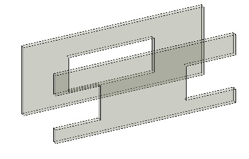
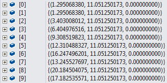

<p><head>
<meta http-equiv="Content-Type" content="text/html; charset=utf-8">
<link rel="stylesheet" type="text/css" href="bc.css">
<script src="run_prettify.js" type="text/javascript"></script>
<!---
<script src="https://google-code-prettify.googlecode.com/svn/loader/run_prettify.js" type="text/javascript"></script>
-->
</head></p>
<!---

- http://forums.autodesk.com/t5/revit-api/get-wall-openings/m-p/5955467

#dotnet #csharp
#fsharp #python
#grevit
#responsivedesign #typepad
#ah8 #augi #dotnet
#stingray #rendering
#3dweb #3dviewapi #html5 #threejs #webgl #3d #mobile #vr #ecommerce
#Markdown #Fusion360 #Fusion360Hackathon
#javascript
#RestSharp #restapi
#mongoosejs #mongodb #nodejs
#rtceur
#xaml

Revit API, Jeremy Tammik, akn_include

Retrieving Wall Openings and Sorting Points #revitapi #bim #aec #3dwebcoder #adsk #geometry #3d #apis


I continue my rather active involvement in the Revit API discussion forum. Lets look at one of them, and an associated point or two
&ndash; Retrieving wall openings
&ndash; Ray shooting solution
&ndash; CmdWallOpenings implementation
&ndash; Faster lexicographical point sorting...

- [Retrieving wall openings](#2)
- [Ray shooting solution](#2.1)
- [CmdWallOpenings implementation](#3)
- [Faster lexicographical point sorting](#4)

-->

<h3>Retrieving Wall Openings and Sorting Points</h3>
<p>I continue my rather active involvement in the <a href="http://forums.autodesk.com/t5/revit-api/bd-p/160">Revit API discussion forum</a>.</p>
<p>Lets look at one of them, and an associated point or two:</p>
<ul>
<li><a href="#2">Retrieving wall openings</a></li>
<li><a href="#2.1">Ray shooting solution</a></li>
<li><a href="#3">CmdWallOpenings implementation</a></li>
<li><a href="#4">Faster lexicographical point sorting</a></li>
</ul>
<h4><a name="2"></a>Retrieving Wall Openings</h4>
<p>A very nice geometric issue was raised yesterday by Eirik Aasved Holst concerning the <a href="http://forums.autodesk.com/t5/revit-api/get-wall-openings/m-p/5955539">determination of wall openings</a>:</p>
<p><strong>Question:</strong> I'm struggling to get wall openings using the API. What I'm interested in is the coordinates of a rectangular wall opening:</p>
<p><center>

</center></p>
<p>I've tried FindInserts(), but it's not given that anything is inserted in the opening.</p>
<p>Does anyone have a solution for this?</p>
<p><strong>Answer:</strong> This is an interesting question, and therefore has many answers.</p>
<p>You can determine the elements inserted in the wall (incl. openings) by temporarily deleting the wall. That gives you a list of all the dependent objects that also got deleted. Then you have the elements you are after.</p>
<p>You could look at the wall geometry before and after deleting the inserted elements and determine the differences.</p>
<p>You could query the wall for its geometry and determine all the holes in the elevation view.</p>
<p>My personal favourite candidate right now, off the hip, would be to shoot a ray along the wall centre line and determine all the faces that it hits.</p>
<p>That only works if you know one specific height or elevation (or several) at which all the openings really are open, so that they really have side faces that the ray intersection will hit.</p>
<p>This technique is demonstrated to find columns intersecting a wall by the FindReferencesByDirection / FindColumns SDK sample.</p>
<p>Have fun exploring, and please let us know what you end up with.</p>
<h4><a name="2.1"></a>Ray Shooting Solution</h4>
<p><strong>Response:</strong> Wonderful! The ray shooting solution works perfectly.</p>
<p>I use the function for a planar view and set the ray elevation equal to view elevation.</p>
<p>For anyone else interested in using the same technique to locate wall openings, remember to set the ray origin a step outside the wall to determine if the wall starts with an opening or not:</p>
<p><center>

</center></p>
<p>Pseudo-code for my solution:</p>
<pre class="code">
  WallOpening2D - a simple class with two
    coordinates and some other basic info.

  List&lt;WallOpening2D&gt; GetWallOpenings(
    Wall wall,
    ViewPlan view )
  {
    var rayStart = new XYZ(
      wallOrigin.X - wallDirection.X,
      wallOrigin.Y - wallDirection.Y,
      GetElevation(view));

    pointList = (from reference in
      new ReferenceIntersector(view)
        .Find(rayStart, wallDirection)
        .where(IsSurface)
        .where(ref => ref.Proximity
          < wallLength + "step outside"))
        select reference.GetReference.GlobalPoint)

    if(!pointList.First().IsAlmostEqualTo(wallOrigin) //CHECK IF FIRST POINT IS NOT AT WALL START
      pointList.Insert(0, wallOrigin);
    else
      pointList.remove(pointList(First));

    if(!IsEven(pointList.Count)  //IF NOT EVEN POINTCOUNT - WALL ENDS WITH OPENING
      pointList.Add(wallEndPoint);

    var wallOpenings = new List<WallOpening2D>();
    for(i = 0; i &lt; pointList.Count -1; i += 2)
      wallOpenings.Add(new WallOpening2D(pointList[i], pointList[i+1]);

    return wallOpenings;
  }
</pre>

<p><strong>Answer:</strong> I am very glad it helped.</p>
<p>Thank you for sharing the pseudo code.</p>
<p>I started implementing the real thing based on that and ran into one single little snag:</p>
<ul>
<li>error CS1502: The best overloaded method match for 'Autodesk.Revit.DB.ReferenceIntersector.ReferenceIntersector(Autodesk.Revit.DB.View3D)' has some invalid arguments</li>
<li>error CS1503: Argument 1: cannot convert from 'Autodesk.Revit.DB.ViewPlan' to 'Autodesk.Revit.DB.View3D'</li>
</ul>
<p>Here is my implementation so far:</p>
<pre class="code">
List<WallOpening2D> GetWallOpenings(
  Wall wall,
  ViewPlan view )
{
  Document doc = wall.Document;
  Level level = doc.GetElement( view.LevelId ) as Level;
  double elevation = level.Elevation;
  Curve c = (wall.Location as LocationCurve).Curve;
  XYZ wallOrigin = c.GetEndPoint(0);
  XYZ wallEndPoint = c.GetEndPoint(1);
  XYZ wallDirection =wallEndPoint - wallOrigin;
  double wallLength = wallDirection.GetLength();
  wallDirection = wallDirection.Normalize();
  UV offset = new UV( wallDirection.X, wallDirection.Y );
  double step_outside = offset.GetLength();

  XYZ rayStart = new XYZ( wallOrigin.X - offset.U,
    wallOrigin.Y - offset.V, elevation );

  ReferenceIntersector intersector = new ReferenceIntersector( view ); // *** error here ***

  IList<ReferenceWithContext> refs = intersector.Find( rayStart, wallDirection );
  List<XYZ> pointList = new List<XYZ>( refs
    .Where<ReferenceWithContext>( r => IsSurface(r.GetReference()))
    .Where<ReferenceWithContext>( r => r.Proximity < wallLength + step_outside)
    .Select<ReferenceWithContext,XYZ>( r => r.GetReference().GlobalPoint) );

  // Check if first point is not at wall start.
  // If so, the wall begins with an opening, so
  // add its start point.

  if(!pointList.First().IsAlmostEqualTo(wallOrigin))
  {
    pointList.Insert(0, wallOrigin);
  }
  else
  {
    pointList.Remove(pointList.First());
  }

  // If the point count in not even, the wall
  // ends  with an opening, so add its end as
  // a new last point.

  if(!IsEven(pointList.Count))
  {
    pointList.Add(wallEndPoint);
  }

  int n = pointList.Count;
  var wallOpenings = new List<WallOpening2D>( n / 2 );
  for( int i = 0; i < n; i += 2 )
  {
    wallOpenings.Add( new WallOpening2D {
      Start = pointList[i],
      End = pointList[i + 1] } );
  }
  return wallOpenings;
}
</pre>

<p>I obviously have to provide a 3D view, not a plan one.</p>
<p>I also get a pretty weird point list from my sample wall with four openings, none of them at either end of the wall, all in the middle.</p>
<p>The wall start point appears twice, the wall end point does not appear at all, and the points are not sorted by proximity:</p>
<p><center>

</center></p>
<p>I have to add some clean-up and fool-proofing to get a reliable result.</p>
<p>I implemented a working command
in <a href="https://github.com/jeremytammik/the_building_coder_samples">The Building Coder samples</a>
<a href="https://github.com/jeremytammik/the_building_coder_samples/releases/tag/2016.0.124.0">release 2016.0.124.0</a>.</p>
<p>The external command name
is <a href="https://github.com/jeremytammik/the_building_coder_samples/blob/master/BuildingCoder/BuildingCoder/CmdWallOpenings.cs">CmdWallOpenings</a>.</p>
<p><strong>Response:</strong> Some corrections to my pseudocode:</p>
<ul>
<li>You are right about the view3D. I'm using the 2D view to get the elevation of the view range cut plane. For the ReferenceIntersector, I'm using the standard 3D view (just make sure it does not have an active section box and that all relevant elements are visible).</li>
</ul>
<pre class="code">
  var default3DView
    = new FilteredElementCollector(doc)
      .OfClass(typeof (View3D))
      .ToElements()
      .Cast<View3D>()
      .FirstOrDefault( v
        => v != null
        && !v.IsTemplate
        && v.Name.Equals("{3D}"));
</pre>

<p>Of course one may create a new 3D view if that works better.</p>
<ul>
<li>I forgot to specify that the reference intersector should only return Faces belonging to the relevant wall.</li>
</ul>
<pre class="code">
  var referenceIntersector
    = new ReferenceIntersector( wall.Id,
      FindReferenceTarget.Face, default3DView);
</pre>

<ul>
<li>"The wall start point appears twice, the wall end point does not appear at all, and the points are not sorted by proximity:"</li>
</ul>
<p>The points will get sorted by proximity when the wall.id is specified to the ReferenceIntersector.</p>
<p>Your points are sorted by element, then by proximity.</p>
<p>To get the wall end point, it is important to set the "step_outside" sufficiently large in the clause</p>
<pre class="code">
  .Where<ReferenceWithContext>( r => r.Proximity < wallLength + step_outside)
</pre>

<p>The first point appears twice probably because <code>!pointList.First().IsAlmostEqualTo(wallOrigin)</code> in</p>
<pre class="code">
  if(!pointList.First().IsAlmostEqualTo(wallOrigin))
  {
    pointList.Insert(0, wallOrigin);
  }
</pre>

<p>will always return true (or !false) and therefore the start point gets inserted.</p>
<p>This is because the wall origin Z coordinate is not necessarily the same as the ray start Z coordinate.</p>
<p>I changed the code to:</p>
<pre class="code">
  Curve c = (wall.Location as LocationCurve).Curve;

  var wallStartPoint = new XYZ( c.GetEndPoint(0).X,
    c.GetEndPoint(0).Y, elevation);

  var rayStart = new XYZ(
    wallStartPoint.X - wallLine.Direction.X,
    wallStartPoint.Y - wallLine.Direction.Y,
    wallStartPoint.Z);

  ...

  if (!pointList.First().IsAlmostEqualTo(wallStartPoint))
    pointList.Insert(0, wallStartPoint);
</pre>

<p>My code works quite well now; thank you for the suggestion to use a shooting ray &nbsp; :-)</p>
<p><strong>Answer:</strong> Thank you for picking up my questions.</p>
<p>As you can see from my later post and GitHub submission, I also found and solved all the issues you mention my own way.</p>
<ol>
<li>
<p>I just use the currently active user selected 3D view.</p>
</li>
<li>
<p>Yes, I noticed and added that as well.</p>
</li>
<li>
<p>Nope. The points I list above are the exact results of the call to Find, with nothing added or removed. I think my problems were caused by using elevation zero, so the ray was passing through the bottom edges of the wall faces. That way, it is hit or miss whether an intersection is found or not. I raised it off the floor and extend it beyond the wall at each end by 0.1 feet, and then I get reliable results. I am surprised that is not causing problems for you.</p>
</li>
<li>
<p>My code works well too. Check it out on GitHub. If you see any further possible improvements, please let me know.</p>
</li>
</ol>
<p><strong>Suggestion 1:</strong> One addition concerning the default 3D view.
In a workshared environment, there is no "{3D}".
Instead of this, if a user creates a new default 3D view, this will be named like "{3d - username}".
Note the username suffix and the lowercase "d".</p>
<p><strong>Suggestion 2:</strong> Instead of just elevating the one and single ray, what about using multiple rays, like a comb?</p>
<p><strong>Answer:</strong> I totally agree.</p>
<p>Define a parameter specifying the minimum opening size, and then fan a comb up the entire wall side.</p>
<p>Retrieve all the resulting intersection points, sort them by proximity, eliminate duplicates, and Bob's your uncle.</p>
<h4><a name="3"></a>CmdWallOpenings Implementation</h4>
<p>As said, I implemented and tested this algorithm in a new <a href="https://github.com/jeremytammik/the_building_coder_samples/blob/master/BuildingCoder/BuildingCoder/CmdWallOpenings.cs">external command CmdWallOpenings</a>
in <a href="https://github.com/jeremytammik/the_building_coder_samples">The Building Coder samples</a>
<a href="https://github.com/jeremytammik/the_building_coder_samples/releases/tag/2016.0.124.0">release 2016.0.124.0</a>.</p>
<p>I only performed minimal testing of it on these three different walls:</p>
<p><center>

</center></p>
<p>Each of them has four openings.
Running the CmdWallOpenings command once for each wall reports the four openings like this:</p>
<pre>
  4 openings found:
  ((-0.42,18.27,0.1)-(2.59,18.27,0.1))
  ((5.49,18.27,0.1)-(8.49,18.27,0.1))
  ((9.43,18.27,0.1)-(12.43,18.27,0.1))
  ((13.36,18.27,0.1)-(16.37,18.27,0.1))
  4 openings found:
  ((0.78,4.77,0)-(2.73,5.68,0.1))
  ((4.47,6.5,0.1)-(7.19,7.76,0.1))
  ((8.93,8.58,0.1)-(11.66,9.84,0.1))
  ((13.1,10.52,0.1)-(15.82,11.79,0.1))
  4 openings found:
  ((2.23,-3.24,0.1)-(5.12,-2.41,0.1))
  ((6.96,-1.88,0.1)-(9.85,-1.06,0.1))
  ((12.32,-0.35,0.1)-(15.21,0.48,0.1))
  ((15.79,0.65,0.1)-(17.24,1.06,0))
</pre>

<p><center>

</center></p>
<p>The wall opening data currently just includes the opening start and end points:</p>
<pre class="code">
&nbsp; <span class="gray">///</span><span class="green"> </span><span class="gray">&lt;summary&gt;</span>
&nbsp; <span class="gray">///</span><span class="green"> A simple class with two coordinates </span>
&nbsp; <span class="gray">///</span><span class="green"> and some other basic info.</span>
&nbsp; <span class="gray">///</span><span class="green"> </span><span class="gray">&lt;/summary&gt;</span>
&nbsp; <span class="blue">class</span> <span class="teal">WallOpening2D</span>
&nbsp; {
&nbsp; &nbsp; <span class="green">//public ElementId Id { get; set; }</span>
&nbsp; &nbsp; <span class="blue">public</span> <span class="teal">XYZ</span> Start { <span class="blue">get</span>; <span class="blue">set</span>; }
&nbsp; &nbsp; <span class="blue">public</span> <span class="teal">XYZ</span> End { <span class="blue">get</span>; <span class="blue">set</span>; }
&nbsp; &nbsp; <span class="blue">override</span> <span class="blue">public</span> <span class="blue">string</span> ToString()
&nbsp; &nbsp; {
&nbsp; &nbsp; &nbsp; <span class="blue">return</span> <span class="maroon">&quot;(&quot;</span>
&nbsp; &nbsp; &nbsp; &nbsp; <span class="green">//+ Id.ToString() + &quot;@&quot;</span>
&nbsp; &nbsp; &nbsp; &nbsp; + <span class="teal">Util</span>.PointString( Start ) + <span class="maroon">&quot;-&quot;</span>
&nbsp; &nbsp; &nbsp; &nbsp; + <span class="teal">Util</span>.PointString( End ) + <span class="maroon">&quot;)&quot;</span>;
&nbsp; &nbsp; }
&nbsp; }
</pre>

<p>I use an offset to raise the ray above the floor level and thus avoid intersecting the bottom edge of the wall faces:</p>
<p>This offset is also applied to lengthen the ray beyond the wall extents at both ends.</p>
<pre class="code">
&nbsp; <span class="gray">///</span><span class="green"> </span><span class="gray">&lt;summary&gt;</span>
&nbsp; <span class="gray">///</span><span class="green"> Move out of wall and up from floor a bit</span>
&nbsp; <span class="gray">///</span><span class="green"> </span><span class="gray">&lt;/summary&gt;</span>
&nbsp; <span class="blue">const</span> <span class="blue">double</span> _offset = 0.1; <span class="green">// feet</span>
</pre>

<p>The following two predicate methods determine whether a number is even and whether a reference applies to a surface:</p>
<pre class="code">
&nbsp; <span class="gray">///</span><span class="green"> </span><span class="gray">&lt;summary&gt;</span>
&nbsp; <span class="gray">///</span><span class="green"> Predicate: is the given number even?</span>
&nbsp; <span class="gray">///</span><span class="green"> </span><span class="gray">&lt;/summary&gt;</span>
&nbsp; <span class="blue">static</span> <span class="blue">bool</span> IsEven( <span class="blue">int</span> i )
&nbsp; {
&nbsp; &nbsp; <span class="blue">return</span> 0 == i % 2;
&nbsp; }
&nbsp;
&nbsp; <span class="gray">///</span><span class="green"> </span><span class="gray">&lt;summary&gt;</span>
&nbsp; <span class="gray">///</span><span class="green"> Predicate: does the given reference refer to a surface?</span>
&nbsp; <span class="gray">///</span><span class="green"> </span><span class="gray">&lt;/summary&gt;</span>
&nbsp; <span class="blue">static</span> <span class="blue">bool</span> IsSurface( <span class="teal">Reference</span> r )
&nbsp; {
&nbsp; &nbsp; <span class="blue">return</span> <span class="teal">ElementReferenceType</span>.REFERENCE_TYPE_SURFACE
&nbsp; &nbsp; &nbsp; == r.ElementReferenceType;
&nbsp; }
</pre>

<p>The latter could probably be eliminated, since we now specify that we are only interested in surfaces when calling the <code>ReferenceIntersector</code> <code>Find</code> method.</p>
<p>I ensure that distinct points are retained and processed by implementing this XYZ equality comparer and passing it into the LINQ <code>Distinct</code> method:</p>
<pre class="code">
&nbsp; <span class="blue">class</span> <span class="teal">XyzEqualityComparer</span> : <span class="teal">IEqualityComparer</span>&lt;<span class="teal">XYZ</span>&gt;
&nbsp; {
&nbsp; &nbsp; <span class="blue">public</span> <span class="blue">bool</span> Equals( <span class="teal">XYZ</span> a, <span class="teal">XYZ</span> b )
&nbsp; &nbsp; {
&nbsp; &nbsp; &nbsp; <span class="green">//return _eps &gt; a.DistanceTo( b );</span>
&nbsp; &nbsp; &nbsp; <span class="blue">return</span> <span class="teal">Util</span>.IsEqual( a, b );
&nbsp; &nbsp; }
&nbsp;
&nbsp; &nbsp; <span class="blue">public</span> <span class="blue">int</span> GetHashCode( <span class="teal">XYZ</span> a )
&nbsp; &nbsp; {
&nbsp; &nbsp; &nbsp; <span class="blue">return</span> <span class="teal">Util</span>.PointString( a ).GetHashCode();
&nbsp; &nbsp; }
&nbsp; }
</pre>

<p>With those helper methods in place, the main <code>GetWallOpenings</code> method can be implemented as follows:</p>
<pre class="code">
<span class="gray">///</span><span class="green"> </span><span class="gray">&lt;summary&gt;</span>
<span class="gray">///</span><span class="green"> Retrieve all wall openings, </span>
<span class="gray">///</span><span class="green"> including at start and end of wall.</span>
<span class="gray">///</span><span class="green"> </span><span class="gray">&lt;/summary&gt;</span>
<span class="teal">List</span>&lt;<span class="teal">WallOpening2D</span>&gt; GetWallOpenings(
&nbsp; <span class="teal">Wall</span> wall,
&nbsp; <span class="teal">View3D</span> view )
{
&nbsp; <span class="teal">Document</span> doc = wall.Document;
&nbsp; <span class="teal">Level</span> level = doc.GetElement( wall.LevelId ) <span class="blue">as</span> <span class="teal">Level</span>;
&nbsp; <span class="blue">double</span> elevation = level.Elevation;
&nbsp; <span class="teal">Curve</span> c = ( wall.Location <span class="blue">as</span> <span class="teal">LocationCurve</span> ).Curve;
&nbsp; <span class="teal">XYZ</span> wallOrigin = c.GetEndPoint( 0 );
&nbsp; <span class="teal">XYZ</span> wallEndPoint = c.GetEndPoint( 1 );
&nbsp; <span class="teal">XYZ</span> wallDirection = wallEndPoint - wallOrigin;
&nbsp; <span class="blue">double</span> wallLength = wallDirection.GetLength();
&nbsp; wallDirection = wallDirection.Normalize();
&nbsp; <span class="teal">UV</span> offsetOut = _offset * <span class="blue">new</span> <span class="teal">UV</span>( wallDirection.X, wallDirection.Y );
&nbsp;
&nbsp; <span class="teal">XYZ</span> rayStart = <span class="blue">new</span> <span class="teal">XYZ</span>( wallOrigin.X - offsetOut.U,
&nbsp; &nbsp; wallOrigin.Y - offsetOut.V, elevation + _offset );
&nbsp;
&nbsp; <span class="teal">ReferenceIntersector</span> intersector
&nbsp; &nbsp; = <span class="blue">new</span> <span class="teal">ReferenceIntersector</span>( wall.Id,
&nbsp; &nbsp; &nbsp; <span class="teal">FindReferenceTarget</span>.Face, view );
&nbsp;
&nbsp; <span class="teal">IList</span>&lt;<span class="teal">ReferenceWithContext</span>&gt; refs
&nbsp; &nbsp; = intersector.Find( rayStart, wallDirection );
&nbsp;
&nbsp; <span class="green">// Extract the intersection points:</span>
&nbsp; <span class="green">// - only surfaces</span>
&nbsp; <span class="green">// - within wall length plus offset at each end</span>
&nbsp; <span class="green">// - sorted by proximity</span>
&nbsp; <span class="green">// - eliminating duplicates</span>
&nbsp;
&nbsp; <span class="teal">List</span>&lt;<span class="teal">XYZ</span>&gt; pointList = <span class="blue">new</span> <span class="teal">List</span>&lt;<span class="teal">XYZ</span>&gt;( refs
&nbsp; &nbsp; .Where&lt;<span class="teal">ReferenceWithContext</span>&gt;( r =&gt; IsSurface(
&nbsp; &nbsp; &nbsp; r.GetReference() ) )
&nbsp; &nbsp; .Where&lt;<span class="teal">ReferenceWithContext</span>&gt;( r =&gt; r.Proximity
&nbsp; &nbsp; &nbsp; &lt; wallLength + _offset + _offset )
&nbsp; &nbsp; .OrderBy&lt;<span class="teal">ReferenceWithContext</span>, <span class="blue">double</span>&gt;(
&nbsp; &nbsp; &nbsp; r =&gt; r.Proximity )
&nbsp; &nbsp; .Select&lt;<span class="teal">ReferenceWithContext</span>, <span class="teal">XYZ</span>&gt;( r
&nbsp; &nbsp; &nbsp; =&gt; r.GetReference().GlobalPoint )
&nbsp; &nbsp; .Distinct&lt;<span class="teal">XYZ</span>&gt;( <span class="blue">new</span> <span class="teal">XyzEqualityComparer</span>() ) );
&nbsp;
&nbsp; <span class="green">// Check if first point is at the wall start.</span>
&nbsp; <span class="green">// If so, the wall does not begin with an opening,</span>
&nbsp; <span class="green">// so that point can be removed. Else, add it.</span>
&nbsp;
&nbsp; <span class="teal">XYZ</span> q = wallOrigin + _offset * <span class="teal">XYZ</span>.BasisZ;
&nbsp;
&nbsp; <span class="blue">bool</span> wallHasFaceAtStart = <span class="teal">Util</span>.IsEqual(
&nbsp; &nbsp; pointList[0], q );
&nbsp;
&nbsp; <span class="blue">if</span>( wallHasFaceAtStart )
&nbsp; {
&nbsp; &nbsp; pointList.RemoveAll( p
&nbsp; &nbsp; &nbsp; <span class="green">//=&gt; _eps &gt; p.DistanceTo( q ) );</span>
&nbsp; &nbsp; &nbsp; =&gt; <span class="teal">Util</span>.IsEqual( p, q ) );
&nbsp; }
&nbsp; <span class="blue">else</span>
&nbsp; {
&nbsp; &nbsp; pointList.Insert( 0, wallOrigin );
&nbsp; }
&nbsp;
&nbsp; <span class="green">// Check if last point is at the wall end.</span>
&nbsp; <span class="green">// If so, the wall does not end with an opening, </span>
&nbsp; <span class="green">// so that point can be removed. Else, add it.</span>
&nbsp;
&nbsp; q = wallEndPoint + _offset * <span class="teal">XYZ</span>.BasisZ;
&nbsp;
&nbsp; <span class="blue">bool</span> wallHasFaceAtEnd = <span class="teal">Util</span>.IsEqual(
&nbsp; &nbsp; pointList.Last(), q );
&nbsp;
&nbsp; <span class="blue">if</span>( wallHasFaceAtEnd )
&nbsp; {
&nbsp; &nbsp; pointList.RemoveAll( p
&nbsp; &nbsp; &nbsp; <span class="green">//=&gt; _eps &gt; p.DistanceTo( q ) );</span>
&nbsp; &nbsp; &nbsp; =&gt; <span class="teal">Util</span>.IsEqual( p, q ) );
&nbsp; }
&nbsp; <span class="blue">else</span>
&nbsp; {
&nbsp; &nbsp; pointList.Add( wallEndPoint );
&nbsp; }
&nbsp;
&nbsp; <span class="blue">int</span> n = pointList.Count;
&nbsp;
&nbsp; <span class="teal">Debug</span>.Assert( IsEven( n ),
&nbsp; &nbsp; <span class="maroon">&quot;expected an even number of opening sides&quot;</span> );
&nbsp;
&nbsp; <span class="blue">var</span> wallOpenings = <span class="blue">new</span> <span class="teal">List</span>&lt;<span class="teal">WallOpening2D</span>&gt;(
&nbsp; &nbsp; n / 2 );
&nbsp;
&nbsp; <span class="blue">for</span>( <span class="blue">int</span> i = 0; i &lt; n; i += 2 )
&nbsp; {
&nbsp; &nbsp; wallOpenings.Add( <span class="blue">new</span> <span class="teal">WallOpening2D</span>
&nbsp; &nbsp; {
&nbsp; &nbsp; &nbsp; Start = pointList[i],
&nbsp; &nbsp; &nbsp; End = pointList[i + 1]
&nbsp; &nbsp; } );
&nbsp; }
&nbsp; <span class="blue">return</span> wallOpenings;
}
</pre>

<p>The external command mainline Execute method drives it like this to achieve the following:</p>
<ul>
<li>Ensure we are running in a valid context.</li>
<li>Select a wall, or retrieve the pre-selected one.</li>
<li>Retrieve the wall openings.</li>
<li>Report the result.</li>
</ul>
<pre class="code">
<span class="blue">public</span> <span class="teal">Result</span> Execute(
&nbsp; <span class="teal">ExternalCommandData</span> commandData,
&nbsp; <span class="blue">ref</span> <span class="blue">string</span> message,
&nbsp; <span class="teal">ElementSet</span> elements )
{
&nbsp; <span class="teal">UIApplication</span> uiapp = commandData.Application;
&nbsp; <span class="teal">UIDocument</span> uidoc = uiapp.ActiveUIDocument;
&nbsp; <span class="teal">Document</span> doc = uidoc.Document;
&nbsp;
&nbsp; <span class="blue">if</span>( <span class="blue">null</span> == doc )
&nbsp; {
&nbsp; &nbsp; message = <span class="maroon">&quot;Please run this command in a valid document.&quot;</span>;
&nbsp; &nbsp; <span class="blue">return</span> <span class="teal">Result</span>.Failed;
&nbsp; }
&nbsp;
&nbsp; <span class="teal">View3D</span> view = doc.ActiveView <span class="blue">as</span> <span class="teal">View3D</span>;
&nbsp;
&nbsp; <span class="blue">if</span>( <span class="blue">null</span> == view )
&nbsp; {
&nbsp; &nbsp; message = <span class="maroon">&quot;Please run this command in a 3D view.&quot;</span>;
&nbsp; &nbsp; <span class="blue">return</span> <span class="teal">Result</span>.Failed;
&nbsp; }
&nbsp;
&nbsp; <span class="teal">Element</span> e = <span class="teal">Util</span>.SelectSingleElementOfType(
&nbsp; &nbsp; uidoc, <span class="blue">typeof</span>( <span class="teal">Wall</span> ), <span class="maroon">&quot;wall&quot;</span>, <span class="blue">true</span> );
&nbsp;
&nbsp; <span class="teal">List</span>&lt;<span class="teal">WallOpening2D</span>&gt; openings = GetWallOpenings(
&nbsp; &nbsp; e <span class="blue">as</span> <span class="teal">Wall</span>, view );
&nbsp;
&nbsp; <span class="blue">int</span> n = openings.Count;
&nbsp;
&nbsp; <span class="blue">string</span> msg = <span class="blue">string</span>.Format(
&nbsp; &nbsp; <span class="maroon">&quot;{0} opening{1} found{2}&quot;</span>,
&nbsp; &nbsp; n, <span class="teal">Util</span>.PluralSuffix( n ),
&nbsp; &nbsp; <span class="teal">Util</span>.DotOrColon( n ) );
&nbsp;
&nbsp; <span class="teal">Util</span>.InfoMsg2( msg, <span class="blue">string</span>.Join(
&nbsp; &nbsp; <span class="maroon">&quot;\r\n&quot;</span>, openings ) );
&nbsp;
&nbsp; <span class="blue">return</span> <span class="teal">Result</span>.Succeeded;
}
</pre>

<h4><a name="4"></a>Faster Lexicographical Point Sorting</h4>
<p>While evaluating different methods for sorting and comparing points, I also implemented the following <code>XyzProximityComparer</code>:</p>
<pre class="code">
&nbsp; <span class="blue">class</span> <span class="teal">XyzProximityComparer</span> : <span class="teal">IComparer</span>&lt;<span class="teal">XYZ</span>&gt;
&nbsp; {
&nbsp; &nbsp; <span class="teal">XYZ</span> _p;
&nbsp;
&nbsp; &nbsp; <span class="blue">public</span> XyzProximityComparer( <span class="teal">XYZ</span> p )
&nbsp; &nbsp; {
&nbsp; &nbsp; &nbsp; _p = p;
&nbsp; &nbsp; }
&nbsp;
&nbsp; &nbsp; <span class="blue">public</span> <span class="blue">int</span> Compare( <span class="teal">XYZ</span> x, <span class="teal">XYZ</span> y )
&nbsp; &nbsp; {
&nbsp; &nbsp; &nbsp; <span class="blue">double</span> dx = x.DistanceTo( _p );
&nbsp; &nbsp; &nbsp; <span class="blue">double</span> dy = y.DistanceTo( _p );
&nbsp; &nbsp; &nbsp; <span class="blue">return</span> <span class="teal">Util</span>.IsEqual( dx, dy ) ? 0
&nbsp; &nbsp; &nbsp; &nbsp; : ( dx &lt; dy ? -1 : 1 );
&nbsp; &nbsp; }
&nbsp; }
</pre>

<p>I ended up not using it, for two reasons:</p>
<ul>
<li>The <code>ReferenceIntersector</code> already returns the points sorted by proximity.</li>
<li>I can use a LINQ <code>OrderBy</code> clause instead.</li>
</ul>
<p>Anyway, while researching this, I discovered the StackOverflow question
on <a href="http://stackoverflow.com/questions/14336416/using-icomparer-for-sorting">using IComparer for sorting</a>.</p>
<p>It discusses a point comparison class similar to <code>XyzEqualityComparer</code> presented above, only to continue with the following extremely interesting information:</p>
<blockquote>
<p>Note that if you target a .NET 3.5+ application you can use LINQ which is easier and even faster with sorting.</p>
<p>LINQ version can be something like:</p>
<pre><code>var orderedList = Points.OrderBy(point =&gt; point.x)
   .ThenBy(point =&gt; point.y)
   .ToList();
</code></pre>
</blockquote>
<p>This is definitely something to keep in mind next time you are thinking about sorting a collection of points!</p>